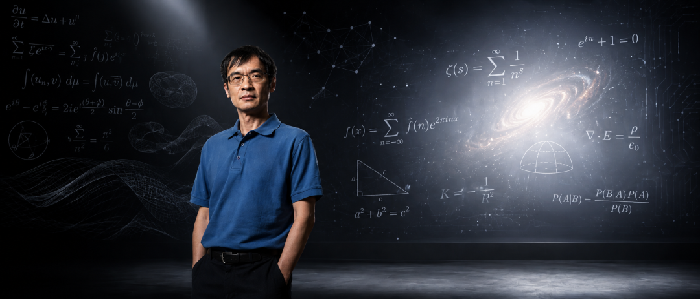

新智元报道
新智元报道

就在最近，菲尔兹奖得主陶哲轩亲自下场发了篇论文——AI时代的数学。
这是他第一次在ICM级别的场合，系统论述AI对数学的冲击。
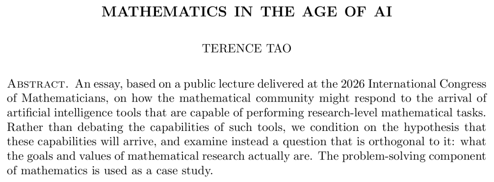
论文地址：https://arxiv.org/abs/2608.16753
在论文里，他引了一组数据，直接炸场。
10道从未公开的研究级数学难题，4个前沿AI系统作答，其中7道拿到了至少一个「基本无瑕」的解答。
计算成本只要几十到几百美元，一个博士生可能要啃三年的题，AI花几百块钱就搞定了。
但陶哲轩写这篇论文，根本不是来报喜的。
他真正想问的东西，要尖锐得多——
当AI能做数学的时候，数学家到底在做什么？
甚至，他还亮出了一道填空题，叫「AI能力猜想」。
在不远的将来的____之内，AI工具将以____的成本、在____程度的人类监督下，在____数学领域，完成____研究级数学任务，成功率____，正确性与质量____。
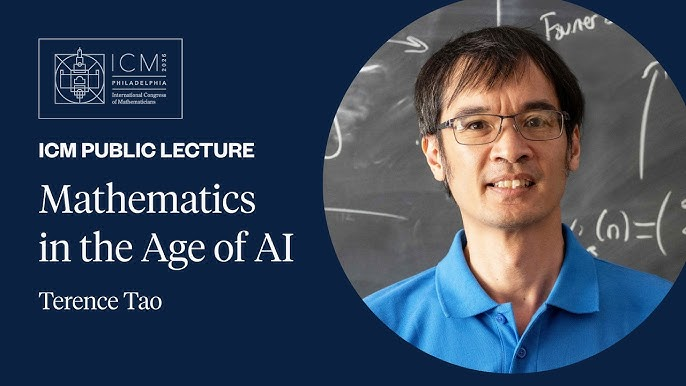

这是陶哲轩这篇论文最硬核的一段。
他把「解一道数学题」这件事拆成了五级流水线，一级一级往上追问。你以为做到了就够了？远远不够。
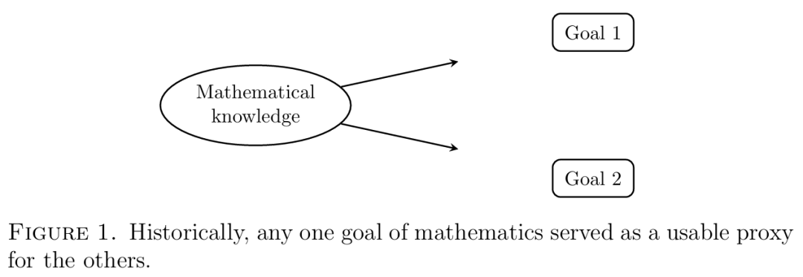
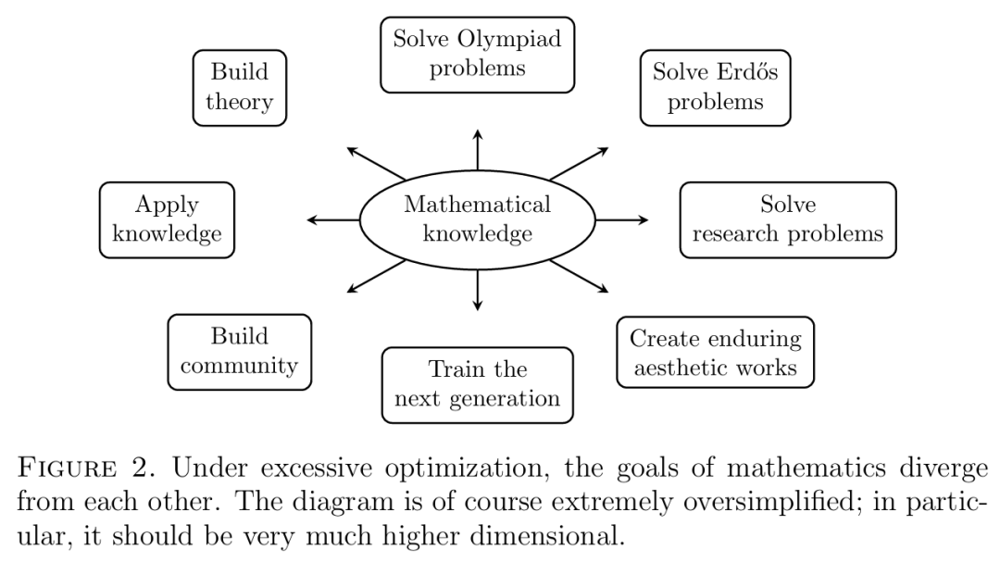
第一级是解尽可能多的未解问题。
听起来合理，但如果只追求数量，会产生大量错误的解。一个什么题都往上冲的AI系统，和一个灌水的博士生本质没区别。
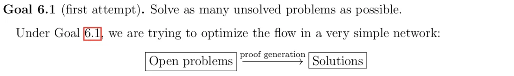
第二级是在此基础上加验证正确性。
好了一步，形式化证明工具可以让机器去检查每一步逻辑。
但对不对和好不好是两码事，一份正确但毫无洞见的证明，就像一篇没有语法错误但空洞无物的文章。
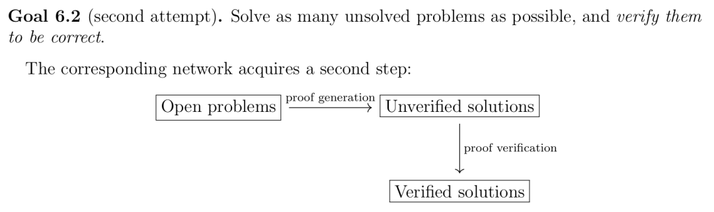
第三级是加上清晰表述，让人类能理解。
又进了一步，但这里出现了一个微妙的问题。
AI生成的证明往往「太光滑」了。每一步都逻辑严密，每个跳跃都被补齐，通篇没有一处让你困惑的地方。
听起来像优点？在数学家看来恰恰是缺陷。
人类写的证明有一种「自然摩擦」。作者会在关键处停下来解释为什么选这条路，会在困难处承认「这一步不显然」，会留下自己思考的痕迹。这些摩擦看起来像瑕疵，其实是给后来者留的路标。
打个比方，AI的证明像被传送到了山顶，人类的证明是带你爬上去，沿途告诉你这里有个坑，那边有条小路，远处那座山也值得看一眼。
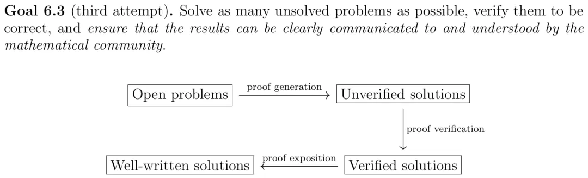
第四级是被学术共同体消化接受。
这就更进一步了。发表在期刊上、通过同行评审，这些环节不是一个作者或者一台机器能优化的。审稿人有自己的判断，学术社区有自己的节奏。
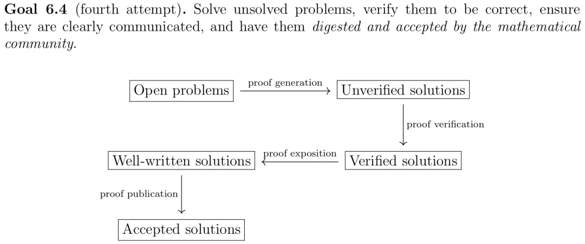
第五级是最终融入学科的标准理论。
这是最高一级。一个结果被证明是一回事，被写进教科书是另一回事。经典化过程是整条流水线上最慢的环节，恰恰也是最有价值的。
五级台阶从下往上，越来越慢，越来越需要人。
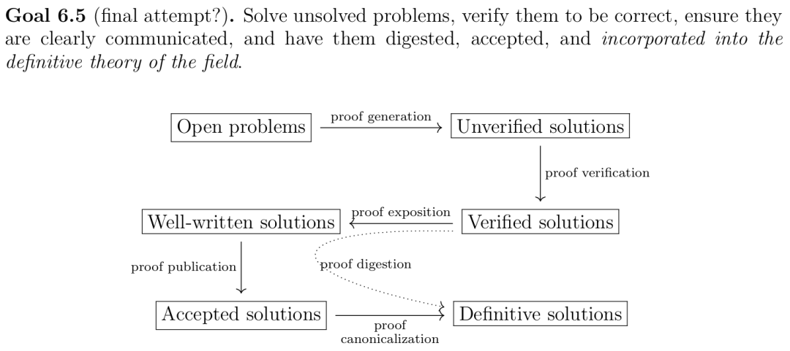
由此，陶哲轩提出了一个概念，可能是整篇论文里最锋利的贡献。
「证明消化不良」（proof indigestion）。
过去几百年，数学一直处于「证明稀缺」时代。难题太多，证明太少，每一个证明都金贵。
围绕数学建起来的整套基础设施，从期刊到评审到教学体系，全是为稀缺设计的。
现在，时代要翻过来了。
AI生成证明的速度，将远超人类验证、表述、评审、消化的速度。流水线入口被撕开了，但后面四级的处理能力没有变。
换句话说，数学的瓶颈，从「产生证明」变成了「消化证明」。
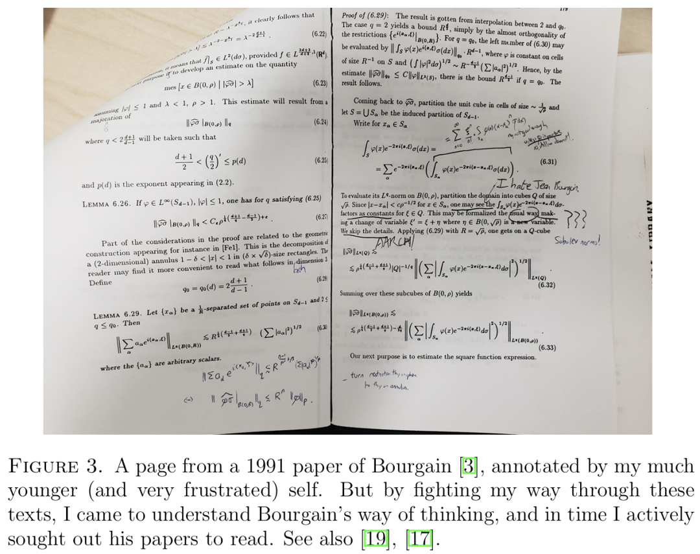
其实吧，上一次数学界这么焦虑，还要追溯到1920年代。那场「基础危机」撕裂了整个学科，希尔伯特和布劳威尔打得不可开交，争的只有一件事，数学的根基到底是什么。
一百年过去，根基的问题解决了。新的裂缝从完全不同的方向裂开。
陶哲轩的判断很直接，数学正面临一场堪比基础危机的新动荡。只不过这次动荡的核心，是数学研究的价值观和实践方式。
他在论文中用了一个巧妙的策略，提出了所谓的「工作假设」（Working Hypothesis）。
大意是，先别吵AI能不能做数学这件事了，暂时接受AI工具将在合理时间内完成相当比例的研究级数学任务这个假设，然后去追问一个完全正交的问题。
如果AI真能做数学，我们该怎么办？
面对这场风暴，陶哲轩给出了自己的原则，在ICM的演讲台上当着全世界数学家的面亮出来。
如果作者不能清晰讲解自己的成果，那就不该发表。即使形式化验证已经通过。
这句话，直接否定了一种正在蔓延的态度。AI帮我证了，Lean帮我验了，我虽然讲不太清楚每一步，但结果是对的，发吧。
陶哲轩说，不行。
但他也没有摆出那种「我不用AI」的清高姿态。他在演讲中坦率披露，自己使用AI进行文献搜索、文本自动补全和图表生成。
用AI没问题。但你必须站得上讲台，把每一步讲清楚。
2026年6月发布的《莱顿宣言》（Leiden Declaration on AI and Mathematics）也在说同一件事——
AI可以参与数学研究，但人类必须为最终成果负责。
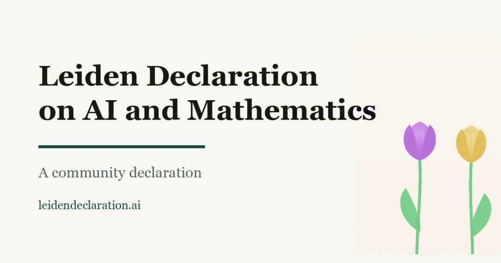
回到费城那道填空题。
5年也好，50年也罢，空格里填什么数字根本不重要。陶哲轩真正留空的，是一个比时间表更根本的东西。
你做数学，到底图什么。
如果图的是把名字刻在定理上，这门生意的利润正在被AI迅速压薄。如果图的是理解这个世界为什么是这样运转的，那这件事从来就不是机器的活。
一百年前的基础危机催生了哥德尔、图灵、冯·诺依曼。危机没有毁灭数学。数学在回应危机的过程中，反而变得更深了。
Thurston说过一句话，放在今天听格外扎心。
我们不是定理的生产机器。证明的目的，是理解。
AI可以生产证明了。但理解这件事，暂时还没有任何机器能替人类完成。
陶哲轩把填空题留在了讲台上。那些空格等的不是一个数字，是整个学科对自己的重新回答。
参考资料：
https://arxiv.org/abs/2608.16753
编辑：摩西